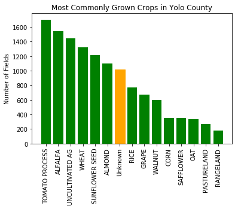
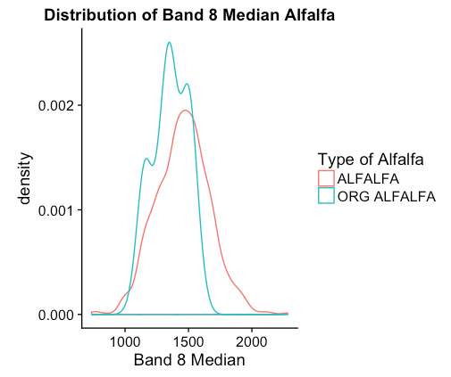
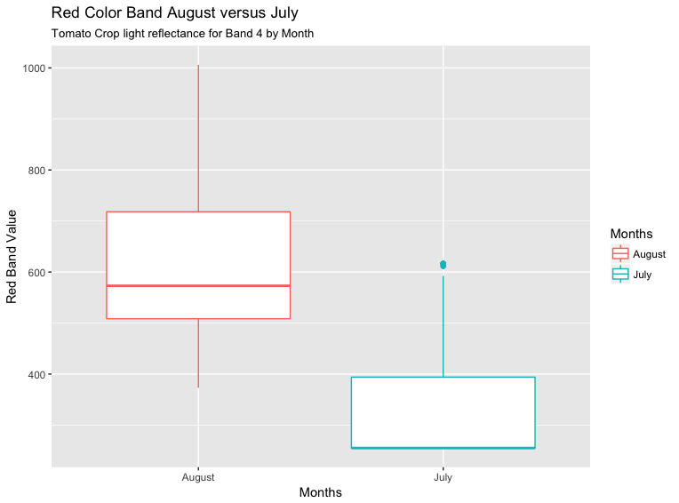
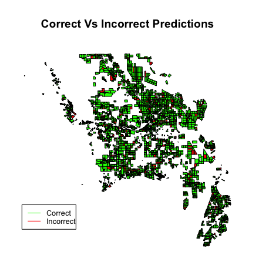
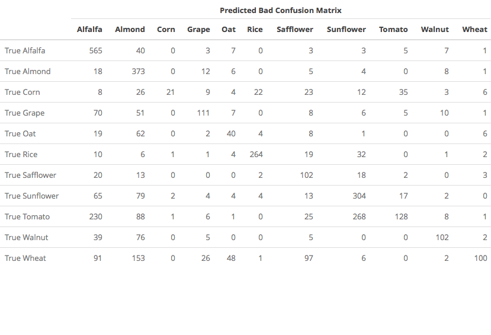
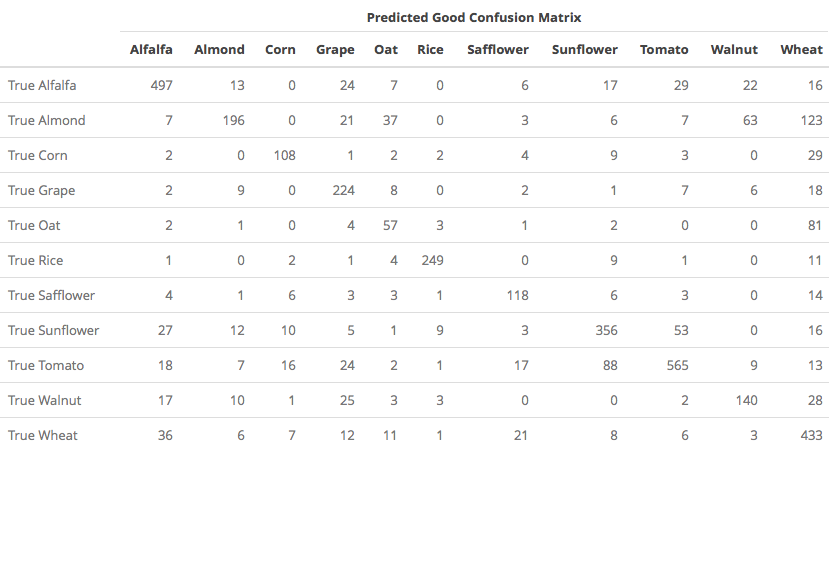
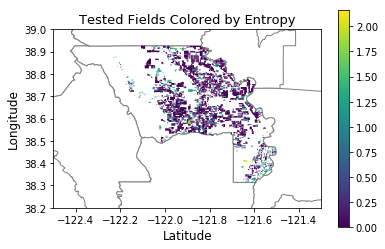
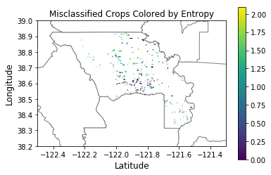
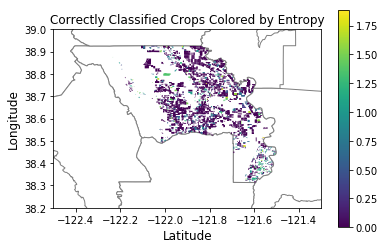

Using Hyperspectral Satellite Images to Classify Crops
Introduction
Satellite Image Analysis is an emerging field due to a plethora of new remote sensing data from satellites and aerial imaging. Aerial imagery has been the primary remote sensing data to aid farming practices for the past 70 years. With advancements in satellite imagery, researchers have shifted from using aerial photography to satellite photography to gain insights on plant health and predict crop yield. Predicting crop yield and monitoring plant health in real time is possible due to increases in computing power and the application of advanced statistical models.
Our project demonstrates the power of statistical learning and image classification for classifying crops in fields based on satellite images. Specifically, the 90% accuracy rate of the classifier demonstrates that using statistical learning methods to classify crop by light bandwidth is effective in finding differences indistinguishable to the human eye.
Recently, the World Bank awarded the Sustainability and Artificial Lab at Stanford [1] for its crop yield and classification algorithm with 10,000 dollars as a solution for fighting food insecurity. Crop yield predictions can provide groups such as the World Health Organization with information on where crops are failing to grow and which areas in developing nations will need aid in the near future. Our project presents a step in a crop yield prediction model by classifying which crops are located where.
The Data
In Luis Samaniego’s paper [2] on crop identification through remote sensing he mentions that spectral light bandwidths are key to differentiating crop types. Thus, for our project we acquired a satellite image from a sentinel 2 satellite, which captures images containing 13 different light bands over an area, hosted on Research and User Support (RUS)- Copernicus program [3]. Sentinel 2 satellites split the bands by using a multispectral beamsplitter that separates the light reflectance of an image into 13 separate light bandwidths. Each light bandwidth is a spectral sensor taken on a different light scale and represents a 3 dimensional array tracking the light reflectance (ƛ) and position of the pixel(x,y)[5].
We chose to use two different satellite images covering Yolo County, one taken on July 15th, 2016 and a second taken on August 23rd, 2016. Crops flower and grow over the summer, thus as the crops grow, they will reflect light differently. Since crops grow over time and the images we have capture two periods over summer, through statistical methods we can use this temporal data to differentiate crops based on the growing season as well.
Using these various light bandwidths we managed to classify the crop fields by crop type. The first light bandwidth represents the coastal aerosols, which is named due to the pixels in this bandwidth having high reflectance values along coasts and bodies of water. The second, third and fourth light bandwidths are colors visible to the human eye, structured as blue, green and red [4]. Bands five through nine depict near infrared bandwidths that are indistinguishable to the human eye, but are key for differentiating crops. Infrared bandwidths are important in identifying vegetation because plants emit more infrared light than other uses of land. Bands 10, 11, and 12 contain shortwave infrared information, which is not useful for classifying crops.
We also obtained a dataset from the Yolo County Geographic Information Systems(GIS) website[6], of crop fields, which contained crop type and shapefile data of all fields in Yolo County in 2016. This dataset, which contains roughly 15,000 crop fields, was used as our response variable and to extract the boundaries of all the fields in Yolo County. The most common crops in our dataset are tomatoes, alfalfa, wheat, and sunflower. These crops each had well over 1000 fields in our database.
As can be seen in the bar plot above, much of the the data was listed as “Unknown” (1133 fields), with no clear note if the field was fallow, had a cover crop on top, or if the field was used for purposes other than farming. We did not use observations listed as “Unknown”, nor did we use observations that listed multiple crops on the field in this study. This is due to our inability to ground truth the crop fields in 2016, due to it being 2018. This makes our data less reliable when predicting for fields with an unknown crop listings or vague crop listings.
We started our analysis by only using the image from the first July date. We identified the pixels within every crop field for each of the first 10 light bands and then extracted the 25th, 40th, 50th, and 75th quantiles, mean, and standard deviation of the light reflectance values for each crop field.These statistics covering the color distributions represent the predictor variables for our eventual model. Since each crop field contained anywhere from 100 to 1,000 pixels and Yolo County has well over 15,000 crop fields, we decided to classify using the distribution of light bandwidths due to a time restraint (And because we have zero idea how to do it otherwise).
Once we obtained the light bandwidth data we went through the Yolo County database to search for differences in crops described as organic or non organic. In order to see if there appeared to be a light band difference between organic and non organic crops, we used a Hotelling T2 test. However, because there are far fewer organic crops than non organic in Yolo County, the organic crops’ light band distribution was not always distributed normally[7]. In order to correct for the normality assumption in the Hotelling T2 Test, we administered a Hotelling T2 Test with a bootstrap to the light bandwidths with the following hypothesis:
H0: Median Color Bands of Non-Organic Alfalfa = Median Color Bands of Organic Alfalfa
H1: Median Color Bands of Non-Organic Alfalfa ≠ Median Color Bands of Organic Alfalfa
From this test we received a p-value of .01; suggesting that at the 95% confidence level we would reject the null hypothesis that there is no difference between the two light bandwidths’ medians. In order to check our results we also administered the same Hotelling T2 Test with a bootstrap correction on Tomato plants.
H0: Median Color Bands of Non-Organic Alfalfa = Median Color Bands of Organic Alfalfa
H1: Median Color Bands of Non-Organic Alfalfa ≠ Median Color Bands of Organic Alfalfa
This resulted in a p-value of .001 which also suggests we reject the null hypothesis that both groups of plants emit similar light reflection.
When looking at both Tomato and Alfalfa’s light reflectance plots it is clear that there is a difference in the distribution of medians for organic and non organic plants in the near infrared light bandwidths, 7 and 8. Therefore for our analysis we include tests run with both all crops and only non-organic crops.
Another problem with the crop listings was that half of the Yolo County GIS data that we used as our response variable is listed as uncultivated and combined with another crop. For instance, every tomato field is also listed as uncultivated - uncultivated suggests the field is fallow; however, tomatoes were the most produced plant in 2016, thus, this information misclassifies the data.
Because our data is from July and tomatoes are planted late spring through early summer, it is difficult to differentiate whether this land is a fallow field or a newly planted field. We overcame this issue by later adding another photo from August and acquiring more data. There are also fields that are listed as uncultivated, but may be growing a cover crop to return nutrients to the soil. These two types of fields (listed as growing but appear to be fallow and listed as fallow but appear to be growing) are the false negatives and false positives in our dataset. We have attempted to minimize our errors by throwing out fields that add confusion ,such as the unknown, uncultivated, and fields with more than 1 crop. This simplifies our data to be able to tell the difference between planted crops that are growing.
Although we used 6000 fields to train the model, our model may not generalize to different climates and location. The data that we used from Yolo County will only have plants that are grown in Yolo County, i.e. alfalfa, tomatoes, and almonds. When new crops are introduced, our algorithm will not be able to properly classify them because it has zero training data to make a prediction.
Questions/Lines of Exploration
We started our analysis with the photo taken on July 15th. Later, we combined the datasets from July 15th and August 23rd to see how adding data for crops that are not be fully visible until late summer or early fall affected accuracy.
July 15th Analysis
To first test if light bandwidths were effective at differentiating crops, we implemented a binary support vector machine (SVM) with a radial basis function (rbf) kernel to test tomatoes vs alfalfa. Each test we ran was split using cross-validation by sampling a random training and testing validation set. Using every light band as predictors we managed to classify 97% of the tomatoes and alfalfa plots correctly.
The SVM constructs hyperplanes for linearly separable patterns. These hyperplanes are determined by support vectors which are the points that lie closest in between the hyperplanes. The support vectors represent points where the SVM fits a line between them to separate classes. In this project the SVM constructs hyperplanes from the distribution statistics of the light bandwidths for each crop field. It then uses those statistics to try and find a line that keeps misclassification error to a minimum.
While the SVM model was effective for binary classification, it was less effective for multi-class classification. The SVM, when introduced to multi-class labeling was only 55% accurate at classifying the top eleven cultivated crops, combining organic and non-organic crops: tomato, alfalfa, wheat, sunflower seed, almond, rice, grape, walnut,oats, corn and rice. The SVM classified poorly because most of the data is not linearly separable in every bandwidth. This caused the SVM to create support vectors that failed to accurately split the data in groups due to SVM relying on linear separations. This error, compounded by the fact that there are 11 fields, greatly increased the amount of misclassifications for the SVM.
In Samaniego’s paper [2], he implements a Modified Nearest Neighbor (kNN) technique to classify crops, so we tried a kNN model to classify crops. We implemented a kNN with 9 neighbors because after running a cross validation score 9 neighbors had the highest accuracy for our model. Our kNN used a euclidean distance to find the nine nearest points in a training set to classify a new given point. The kNN algorithm predicted at 82% accuracy on average in our trials.
We also tested a classification tree method called extremely randomized trees (extra trees). The extra trees method resembles a binary decision tree, except instead of using a particular feature or group of features to make a classification split, the extra trees method samples a group of features from the entire dataset and makes a decision based off the random features. The extra trees method differs from random forests because in extra trees; at each binary decision, the tree randomly samples the features to use for splitting. This is effective for our data because the data itself highly varies by band and because the extra trees splits features randomly it helps avoid adding variance and thus constructs more robust classifier. For our data, the extra trees method samples the light bands and then chooses 8 features to construct each split [9]. The extra trees method obtained 84% accuracy for classification.
The trees method outperformed the kNN because the kNN forced the data into specific classification based on neighbors. The extra trees method is more robust due to its many branches and randomness. This allowed for data points that may be missed after the first branch to find themselves back in the classification at later splits. While the first split usually differentiates groups, because we are using a decision tree, points which might first have a large difference and get seperated, can find itself correctly classified later in the model due to the robust nature of a decision tree model.
While our models did a decent job of detecting differences between crop types, due to the findings that Organic and Non-Organic crops have subtle differences when removing organic produce from our model, the model improved to 86% accuracy. This suggests that organic crops introduce a small amount of noise that the models cannot correct. Another thought is that organic crops are farmed differently, using biological pest control, natural fertilizers, and companion planting instead of industrial farming. This would mean that the farms might be smaller, since a farmer has to put more work and care into his farm in order to keep it organic certified. In a sample size that is already smaller, having less pixels per farm and more noise because of the farming techniques means that the organic data will be much noisier than the industrially farmed areas’ data. Thus reinforcing the result of our Hotelling T2 test that organic light bands are not the same.
The satellites various bandwidths of light allow for the models to pick up the minute differences between crop types. The nearest neighbor and trees classifiers are more robust to non-randomized data compared to the SVM. The two models were able to adapt to the varying sizes of each group and use the light bandwidth information to classify the data with higher than 80% accuracy.
We also decided to investigate how well an individual bandwidth would classify. The predictor did well, predicting around 70% accuracy. After further investigation, we found that bandwidth 3 discriminated between two groups that had the largest influence on our model and exclusively predicted those two crops, which caused a higher accuracy.
July and August
We chose August to be added to July because it was the only photo taken between August and November that had no cloud cover over Yolo County. While August will only add details to crops planted in late spring and early summer, this does allow us to gain information on crops such as tomatoes, which grow over the summer. Having more information on tomatoes is important in our analysis because tomatoes are the highest yielded crop in Yolo County.
Using this extra data, we combined it with the July dataset and tested the same models as preformed above. For our SVM, we obtained an accuracy of 75%, for kNN, 87% and for extra trees 89%. Both kNN and extra trees improved by about 3% in accuracy whereas SVM improved by 20%. The most drastic change in the confusion matrix for the SVM occurs in predicting the tomato crop. The SVM with only the July data made many more predictions for tomato, both right and wrong, whereas with the additional information it predicted less tomatoes and evened out the distribution and accurately predicted many more of the less produced crops[Appendix A]. The kNN and extra trees seem to have just had an even improvement of all crops due to the additional data.
The added accuracy suggests that having images over multiple growing periods improves the models’ classifications. This result was expected because the added information should allow crops which were recently planted, such as tomatoes, to have time to grow and reflect different amounts of light emittance. These results are further exemplified in the box plot below.
For the most accurate model, the extra trees classifier, we investigated the entropy of each crop. The magnitude of the entropy tells us how often our model had to make a close decision between multiple crops. When a data point has a high entropy, that means that our model made a difficult decision when classifying the crop of that field. Corn and alfalfa were the crops with the largest entropy, meaning that the model had to make close decisions with these crops more often than the others. We believe that this is because these are the two largest crop types in Yolo County and therefore would be mistaken for crops because of the quantity of those crops with respect to the quantity of the other crops.
We then went on to calculate the entropy for each sample in the extra trees model and group them by whether we classified correctly or incorrectly. It can be seen by the means of the entropy that the means of the misclassified fields’ entropy is close to 0.9 and the correctly classified fields’ entropy is around 0.15 [Appendix B]. This means that our model, when classifying is sure when it classifies correctly, but when it misclassifies it is confused and is far less confident in its classification. Looking at the plots of the misclassified fields by entropy in Appendix B [B], it can be seen that most of them have high entropy and that they are randomly distributed through the entirety of Yolo County. In the plots of the correctly classified crops there is an area of high entropy the SE corner of Yolo County, although these are correctly classified, it is worth pointing out that there is a spatial correlation to higher entropy in this corner.
Future Directions
The next step in continuing our project is to include data from surrounding areas in order to make our data more robust to elevation, climate, and culture changes. Our project’s main goal was to classify crops in Yolo County. This data restricts our analysis to only Yolo County due to Yolo County having a very specific crop type distribution. Adding in more fields and more crop types from surrounding counties will make our data more robust and applicable to more areas. This step is essential if we want to generalize a classifier to predict crop types in any location and climate. Having location information and elevation information will allow us to visualize crop distribution and how crops change by region. Crops will vary due to soil type, weather factors, location, and elevation. Obtaining data on these factors will help better classify crops.
Using more high definition photos could also help our model classify better. Initially we used NAIP Aerial Imagery from the USDA to detect crops, but after reading papers and investigating models, we switched to lower resolution satellite imagery with more infrared bandwidths. Our resolution went from about 0.6m per pixel to 10m per pixel. With the higher definition imagery in the future we could compare predictions from the satellite images and the aerial photos to evaluate which method worked better.
If we wanted to make this project more about land use in general, another future direction would be detecting crop fields and vegetation without known shapefiles. Detecting crop fields would require us to use edge detection and near infrared bandwidths on images to find the fields. We would need to use the near infrared bandwidths in order to distinguish vegetation from either roads, dirt, or water using the Normalized Difference Vegetation Index (NDVI). This uses the property that vegetation will emit a higher intensity of infrared light compared to red light. After finding areas of vegetation, we would implement edge detection to identify that the vegetation edges clearly represent fields.
Another future goal of our project is to add more temporal data. We added the August images to help our analysis and they added about 3% more accuracy to our final predictions. Adding more Fall, Winter, and Spring photos will add more data on crops not in growing season over the summer. Another difficult part of working with temporal data is that in non-summer seasons there will typically be more cloud cover. This will affect us finding more temporal images and or introduce the problem of stitching images taken over a similar time period together in order to avoid cloud cover. Temporal images help classify which crops are growing in specific areas and can provide better information on how these crops are growing.
Not only will temporal images aid our classification model they will also provide information on how well crop fields are growing. Our findings, especially with added improvements and information will help build a model that can successfully predict crop yields. This is a main goal of groups such as the World Health Organization (WHO)[1], which in fighting food insecurity would benefit from accurate predictions on crop yields. Our findings would help WHO by offering valuable insights as to when and where famine will occur.
Conclusion
As our project stands it is one of the tools to implement a crop yield analysis. Through this project we have illustrated statistical learning techniques are effective at classifying crops and even more-so when using images from varying time periods. Implementing an extra trees model we found that using two different images we could classify 90% of the crop fields in Yolo County correctly. The remaining 10% of the fields had high entropy and were scattered randomly throughout Yolo County; thus we can infer that more powerful neural networks such as the one in Stanford’s paper [1] will make these classifiers more accurate. Below is a photo that shows our final correctly classified versus misclassified map.
Appendix
A.
 B.
  Misclassified Mean: 0.9411
Misclassified Standard Deviation: 0.5931
Correctly Classified Mean: 0.1729
Correctly Classified Standard Deviation: 0.3823
C. Our Reflections
Bibliography/References
[1] You, Jiaxuan, and Xiaocheng Li. “Deep Gaussian Process for Crop Yield Prediction Based on Remote Sensing Data.” Association for the Advancement of Artificial Intelligence , 2017.
[2]Samaniego, Luis, and Karsten Schulz. “Supervised Classification of Agricultural Land Cover Using a Modified k-NN Technique (MNN) and Landsat Remote Sensing Imagery.” Remote Sensing, vol. 1, no. 4, 2009, pp. 875–895., doi:10.3390/rs1040875.
[3] Copernicus Sentinel data 2016. Retrieved from RUS Copernicus Servers on May 3rd 2018.
[4] ESA. “Sentinel 2 ESA’s Optical High-Resolution Mission for GMES Operational Services.” European Space Agency, 2012, doi:Sentinel 2
[5] Hagen, Nathan. “Review of Snapshot Spectral Imaging Technologies.” Optical Engineering, 1 Aug. 2013.
[6] United States, California, Yolo County, Geographic Information Systems. GIS, www.yolocounty.org/general-government/general-government-departments/general-services/geographic-information-system-gis/use-gis.
[7] Denis, Antoine, and Bernard Tychon. “Remote Sensing Enables High Discrimination between Organic and Non-Organic Cotton for Organic Cotton Certification in West Africa.” SpringerLink, Springer, Dordrecht, 16 June 2015, link.springer.com/article/10.1007/s13593-015-0313-2
[8] Uncle, Linux. “Ball Tree Explained in Simple Manner.” Ashokharnal.wordpress.com, 20 Jan. 2015
[9] Geurts, Pierre, et al. “Extremely Randomized Trees.” SpringerLink, Springer, Dordrecht, 2 Mar. 2006, http://link.springer.com/article/10.1007/s10994-006-6226-1.
Canty, Morton John. "Image Analysis, Classification and Change Detection in Remote Sensing: with Algorithms for ENVI. Second ed., 2010.
“Geographic Information Systems Stack Exchange.” Geographic Information Systems Stack Exchange, gis.stackexchange.com/.
Gillies, Sean. “Rasterio.” Rasterio: Geospatial Raster I/O for {Python} Programmers, Mapbox, 2013, github.com/mapbox/rasterio.
H. Wickham. ggplot2: Elegant Graphics for Data Analysis. Springer-Verlag New York, 2009.
Manos Papadakis, Michail Tsagris,et al. (2018). Rfast: A Collection of Efficient and Extremely Fast R Functions. R package version 1.9.0. https://CRAN.R-project.org/package=Rfast
Python Software Foundation. Python Language Reference, version 3.6. Available at www.python.org
R Core Team (2014). R: A language and environment for statistical computing. R Foundation for Statistical Computing, Vienna, Austria. URL http://www.R-project.org/
Scikit-learn: Machine Learning in Python, Pedregosa et al., JMLR 12, pp. 2825-2830, 2011.
Dr. Tobias, M. (2018 May). Personal interview.
United States Department of Agriculture, 2016, National Agriculture Imagery Program. NASA EOSDIS Land Processes DAAC, USGS Earth Resources Observation and Science (EROS) Center, Sioux Falls, South Dakota (https://lpdaac.usgs.gov), accessed [April, 20, 2018], at https://earthexplorer.usgs.gov/.
Dana Iltis B.S. Econ + Math, aspiring M.S. Student: Helped discuss entropy plots and errors.